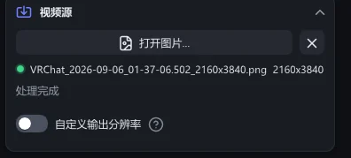
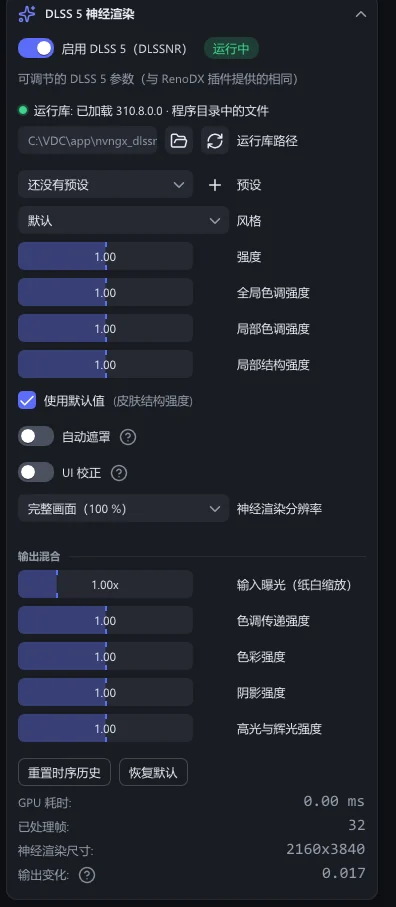
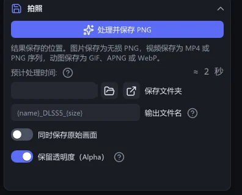
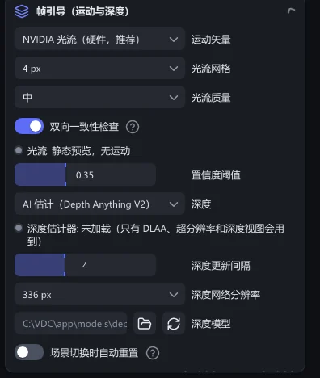
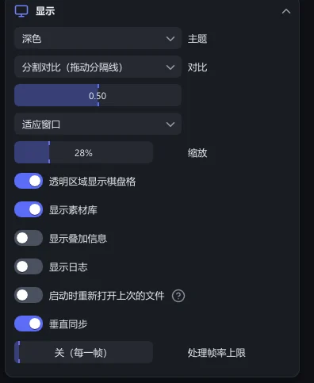
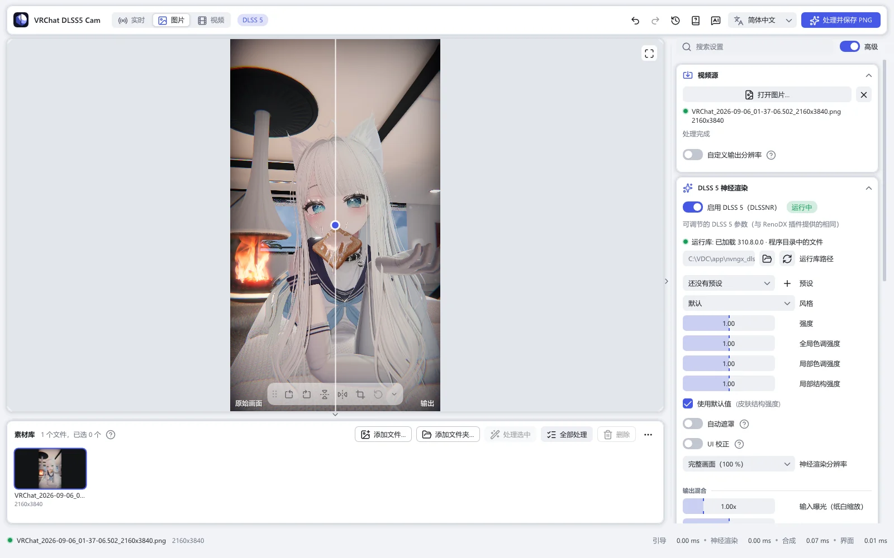
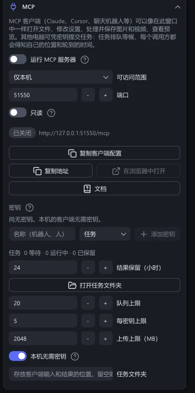
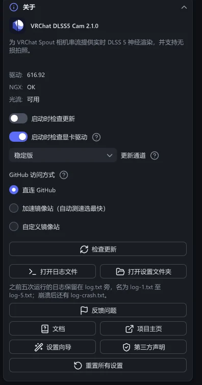

参考
全部设置
侧栏中的每一个控件，按分节、按程序中的顺序列出。
侧栏的分节从上到下依次是：视频源、DLSS 5 神经渲染、拍照、帧引导（运动与深度）、DLAA 预处理、显示、MCP、内部信息和关于。点击分节标题可以折叠该分节。
标有 高级 的控件，只在侧栏顶部的高级开关打开时显示。这个开关默认是打开的。关闭后，侧栏只保留第一张图片需要的控件。
视频源
输入什么，以及以什么尺寸和格式输出。


| 设置 | 作用 |
|---|---|
| Spout 发送端 | 实时模式：接收谁的画面。自动（VRChat）会找到 VRChat 的相机。刷新重新查找发送端。 |
| 打开图片… · 打开视频… | 图片和视频模式：打开文件。旁边的 ✕ 关闭文件，文件仍留在素材库中。 |
| 自定义输出分辨率 | 以不同于来源的尺寸保存。设置宽度和高度；保持宽高比让画面比例不变。比来源大就是放大，比来源小就是缩小。 |
| 放大方式 | 画面怎样放大。DLSS 超分辨率：NVIDIA 的放大器重建细节，然后 DLSS 5 处理放大后的画面。慢得多，也需要更多显存。插值重采样（Catmull-Rom）：普通的滤波。 |
| 同步原视频规格 | 视频。默认打开：结果采用源文件的格式、帧率和码率。GIF、APNG 或 WebP 动图以原来的格式输出，并保留循环次数。 |
| 保存为 | 关闭“同步原视频规格”时可选：MP4 (H.264)、MP4 (HEVC)、PNG 序列、GIF、APNG 或 WebP。该选哪个 |
| 码率 | MP4：平均码率，5 到 200 Mbit/s。设为 40 时，4K 画面几乎看不出压缩痕迹。 |
| 保留音频 | MP4：把声音复制到结果中。 |
| WebP 质量 | WebP 动图：50 到 100。越高画质越好、文件越大；100 为无损。 |
| 硬件解码 | 高级 在显卡上解码视频。文件打不开或颜色不对时，请关闭它。 |
| 纸白（曝光基准） · 高光压缩 | 仅用于 HDR（浮点）Spout 画面：哪个数值成为白色，以及更亮的数值以多柔和的方式滚降。 |
DLSS 5 神经渲染
结果看起来是什么样子。


| 设置 | 作用 |
|---|---|
| 启用 DLSS 5（DLSSNR） | 打开或关闭 DLSS 5。运行时，标记显示运行中。关闭会释放运行库及其显存；打开时重新加载。 |
| 仅拍照时运行神经渲染 | 高级 实时模式，适用于跑不动实时预览的显卡。预览显示原始画面，显卡可以休息。拍照时先对 16 帧新画面运行 DLSS 5，然后再保存。静态图片不受影响。 |
| 运行库路径 · 重新加载 | DLSS 5 运行库文件。留空时，使用为你的显卡附带的那一份。重新加载重新加载它。 |
| 预设 | 你保存的效果。+ 保存当前参数。预设 |
| 风格 | 默认、自然或电影感。 |
| 强度 | 0 到 2。1 是运行库自身的效果，0 让画面保持原样。大于 1 时，程序会放大变化，瑕疵也可能被一起放大。 |
| 全局色调强度 | 高级 DLSS 5 可以在多大程度上改变整体曝光和色彩。0 到 2；大于 1 时由程序放大，与强度相同。 |
| 局部色调强度 | 高级 局部对比度与光照。范围和规则相同。 |
| 局部结构强度 | 高级 细节与纹理。范围和规则相同。 |
| 皮肤结构强度 | 高级 皮肤上的细节。使用默认值交给模型决定。 |
| 自动遮罩 | 高级 让运行库自动遮罩不应改变的区域。 |
| UI 校正 | 高级 保护平坦的、类似界面的区域不被改动。 |
| 神经渲染分辨率 | 高级 完整画面（100 %），上限（如长边不超过 1440 像素），或比例（如画面的 50 %）。尺寸越小，显卡负担越轻；它带来的变化会叠加到全尺寸画面上，但最细微的细节会丢失。 |
| 输入曝光（纸白缩放） | 高级 输出混合。0.25 到 4×。只为网络调亮或调暗画面；结果保持原来的亮度。输入越亮，重新打光就越柔和。 |
| 色调传递强度 | 高级 输出混合。亮度的变化有多少进入结果。0 保留原图，1 与渲染结果一致，2 进一步夸大。 |
| 色彩强度 | 高级 输出混合。作用同上，针对色彩（色相和饱和度）。 |
| 阴影强度 | 高级 输出混合。作用同上，针对压暗：阴影和轮廓。 |
| 高光与辉光强度 | 高级 输出混合。作用同上，针对提亮：高光、反射、辉光。 |
| 重置时序历史 | 清除 DLSS 5 对之前各帧的记忆。 |
| 恢复默认 | 把 DLSS 5 的各项数值恢复为初始值。 |
| GPU 耗时 · 已处理帧 · 神经渲染尺寸 · 输出变化 | 高级 读数。输出变化表示 DLSS 5 把画面改变了多少；运行库报告成功、却返回全黑或没有变化的画面时，程序会发出警告。 |
拍照
结果保存到哪里，以及怎样命名。


| 设置 | 作用 |
|---|---|
| 拍照 · 处理并保存 PNG · 处理并保存视频 | 保存。按钮上的文字随模式变化。 |
| 预计处理时间 | 图片和视频：在这块显卡上保存大约需要多久。每处理一次都会更准确。 |
| 保存文件夹 | 所有内容的保存位置。留空时为 图片\VRChat DLSS5 Cam。浏览…选择文件夹，打开显示它。 |
| 文件名 · 输出文件名 | 文件名模板，分别用于实时照片，以及图片和视频。可以使用的词 |
| 同时保存原始画面 | 同时保存传入时的画面，也就是 DLSS 5 处理之前的样子。 |
| 保留透明度（Alpha） | 高级 保留透明背景。默认打开。 |
| 全局热键 | 实时模式：VRChat 在前台时用来拍照的按键。默认为 Ctrl+Alt+P；勾选 Ctrl、Alt、Shift 或 Win，再选择按键。 |
| 自动拍照间隔（秒） | 实时模式：按这个间隔拍照。0 = 关闭。 |
帧引导（运动与深度）
高级 整个分节。告诉 DLSS 5 的运动信息，以及 DLAA、超分辨率和深度视图使用的深度。工作原理


| 设置 | 作用 |
|---|---|
| 运动矢量 | NVIDIA 光流（硬件，推荐）、FSR 光流（计算着色器，任意显卡）、GPU 块匹配（内置）或无（零）。 |
| 光流网格 · 光流质量 | NVIDIA 光流：矢量的间距，以及引擎的速度设置。4 px 最快；2 px 和 1 px 更精细，但在 4K 下慢得多。 |
| 搜索半径 | FSR 光流和块匹配：搜索的范围有多大。越大越能跟上快速运动，耗时也越长。 |
| 双向一致性检查 | 再反向测量一次运动，两个方向对不上的地方，就降低对矢量的信任。推荐打开。 |
| 置信度阈值 | 置信度低于这个值的矢量会被减弱。 |
| 深度 | AI 估计（Depth Anything V2）、平面、渐变（占位）或零。DLSS 5 不读取它。只有 DLAA、超分辨率或深度视图需要时，深度网络才会加载。 |
| 深度更新间隔 | 每 N 帧运行一次深度网络；在这之间，深度跟随运动变化。 |
| 深度网络分辨率 | 深度网络看到的画面的长边。越大边缘越精细，也越慢。 |
| 深度模型 | 模型文件。留空时使用附带的模型。 |
| 场景切换时自动重置 | 画面剧烈变化时清空时序历史。默认关闭：DLSS 5 会自行恢复，而每次重置都会表现为一次跳变。 |
| 切换阈值 | 多大的变化才算场景切换。 |
DLAA 预处理
高级 整个分节。
| 设置 | 作用 |
|---|---|
| 在神经渲染前运行 DLSS DLAA | NVIDIA 的抗锯齿，以画面本身的尺寸在 DLSS 5 之前运行。能平滑边缘，但会占用 GPU 时间。仅限 GeForce，默认关闭。使用 DLSS 超分辨率时，这一步已经包含在其中。 |
| DLSS 预设 | DLSS 模型的字母代号。默认为 K。 |
显示
窗口怎样显示内容。这些设置都不会改变保存的文件。


| 设置 | 作用 |
|---|---|
| 主题 | 跟随系统按 Windows 设置切换，也可以选择深色或浅色。 |
| 对比 | DLSS 5 输出、原始画面、分割对比（拖动分隔线）、运动矢量或深度。 |
| 适应窗口 · 1:1 像素 | 让整个画面显示在窗口内，或者让一个屏幕像素对应一个图片像素。 |
| 缩放 | 放大倍率。在画面上滚动鼠标滚轮，以指针为中心缩放；拖动可以移动，双击恢复适应窗口。 |
| 透明区域显示棋盘格 | 把透明的部分显示为棋盘格。 |
| 显示素材库 | 画面下方的素材库。 |
| 显示叠加信息 | 在画面上显示尺寸和状态。 |
| 显示日志 | 在窗口中显示程序的日志。 |
| 启动时重新打开上次的文件 | 再次打开上一次会话的文件。默认关闭。 |
| 垂直同步 | 高级 让窗口的绘制与屏幕刷新同步。 |
| 处理帧率上限 | 高级 实时模式：每秒最多处理这么多帧。默认为关（每一帧）。可以为 VRChat 留出显卡资源。 |


MCP
让 MCP 客户端，或另一台电脑上的程序操作本程序。默认关闭。MCP


| 设置 | 作用 |
|---|---|
| 运行 MCP 服务器 | 只要程序在运行，就启动服务器。 |
| 可访问范围 | 仅本机，或局域网（每个客户端一把密钥）。 |
| 端口 · 只读 | TCP 端口，以及客户端是否只能查看。 |
| 密钥 · 任务 | 其他电脑使用的密钥，以及它们的任务队列。 |
内部信息
高级 整个分节。
| 设置 | 作用 |
|---|---|
| GPU 耗时 | 每个步骤在显卡上花费的时间：转换、引导、光流、DLAA、神经渲染、合成以及界面。 |
关于
版本、更新和帮助。


| 设置 | 作用 |
|---|---|
| 启动时检查更新 | 每次启动时查找新版本。默认打开。更新 |
| 启动时检查显卡驱动 | GeForce 驱动低于 DLSS 5 所需的版本（616.56）时，在启动时提醒你。默认打开。 |
| 更新通道 | 稳定版或预览版。 |
| GitHub 访问方式 | 直连 GitHub、加速镜像站（自动测速选最快）或自定义镜像站。测速会测试这些站点。 |
| 检查更新 | 立即查询一次。 |
| 打开日志文件 · 打开设置文件夹 | 本次运行的日志，以及存放设置、预设和旧日志的文件夹。 |
| 反馈问题 | 打开 GitHub 的 issue 表单，其中已填好程序版本和你的显卡。 |
| 文档 · 项目主页 | 本文档网站，以及 GitHub 上的项目页面。 |
| 设置向导 | 再次显示首次启动时的向导。 |
| 第三方声明 | 程序所用组件的许可。 |
| 重置所有设置 | 把所有设置恢复为初始值。执行前会先询问你。 |
| 获取 Radeon 版… · 获取 GeForce 版… | 程序运行在另一家厂商的显卡上时出现。下载对应的版本并切换过去；设置和素材库保持不变。 |
设置保存在 %LOCALAPPDATA%\VRChatDLSS5Cam\settings.ini。程序自己的文件夹